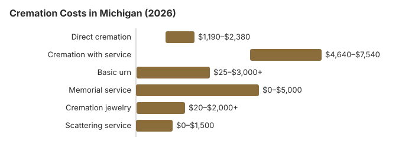

Cremation Costs in Michigan (2026)
Skipping embalming and a public viewing is where a Michigan family saves most by choosing cremation, since a traditional burial nearly always carries both. About 58% of Michigan deaths now end in cremation, 5.4 points under the 63.4% national rate NFDA projected for 2025. Below are our 2026 Michigan price estimates, the county permit that every cremation here needs, and the questions worth asking a provider.
Types of Cremation in Michigan
Direct Cremation
- The lowest-priced way to be cremated
- No visitation or ceremony beforehand
- The body goes from the place of death to the crematory
- The ashes come back to the family
- A memorial can still be held later, on the family's schedule
Cremation with Service
- A full funeral comes first, then cremation
- A viewing or visitation can be included
- The service can be at the funeral home or a church
- A simple urn is usually part of the package
- It feels much like a traditional funeral
Michigan Cremation Prices by Item
| Item | Average Cost | Range |
|---|---|---|
| Direct cremation | $1,700 | $1,190 – $2,380 |
| Cremation with service | $5,800 | $4,640 – $7,540 |
| Basic urn | $50 – $300 | $25 – $3,000+ |
| Memorial service | $500 – $2,000 | $0 – $5,000 |
| Cremation jewelry | $50 – $500 | $20 – $2,000+ |
| Scattering service | $200 – $600 | $0 – $1,500 |
How to read these numbers: they come from our cost model for Michigan, not from calling crematories, and none of them is a quote or advice. Our estimating method and disclaimer explain the limits.
State sources: Michigan MDHHS.

Checks to Make Before a Cremation in Michigan
Before signing with a Michigan cremation provider, confirm these points:
- Pacemakers and implants: These must be removed before a Michigan cremation because their batteries can burst in the cremation chamber.
How to Save on Cremation in Michigan
A few steps can bring a Michigan cremation bill down:
- Get General Price Lists from three or more Michigan providers: The FTC Funeral Rule requires a home to hand you one, and comparing them line by line shows quickly who charges more for the same service.
- Price direct cremation as standalone: Michigan funeral homes often bundle direct cremation into broader packages. Ask for the pure direct cremation price (transport, cremation, return of ashes only) to see the true floor.
- Check Michigan and local rules before choosing a specific scattering location.
How Michigan Cremation Compares With the Region
More than 58% of Michigan families now choose cremation, and cost is a large part of why: at $1,700, direct cremation spares a Midwestern family roughly $5,500 against a traditional burial. In the Detroit area, independent cremation societies and direct cremation providers are now easy to find, and they usually charge less than full-service funeral homes for the same result.
Cremation Resources
- Funeral Consumers AllianceNonprofit advocacy: compare cremation providers
- Cremation Jewelry GuideMemorial keepsakes and remembrance options
- Cremation vs. Burial CostsSide-by-side cost comparison
- Pet Cremation CostsOptions and prices for pet cremation and memorials
- Final Expense InsuranceCoverage options to help pay for cremation costs
Compare Funeral Costs
- Average Funeral Cost in 2026National cost breakdown with real prices
- Cremation vs. Burial Cost ComparisonSide-by-side price comparison to help you decide
- Funeral Cost BreakdownEvery line item explained: know what you're paying for
- Cheapest Funeral OptionsLower-cost alternatives, with typical price ranges
- Direct Cremation: Most Affordable OptionNFDA 2023 median $2,645 with a family-supplied container (latest available)
- How to Compare Funeral PricesStep-by-step guide to getting the best price
Frequently Asked Questions
How much does cremation cost in Michigan?
In Michigan, cremation costs range from $1,700 for a direct cremation up to $5,800 when a full funeral service comes before the cremation.
What kinds of cremation services can I choose in Michigan?
Most Michigan families choose among three options: (1) direct cremation, $1,700, with no service at all; (2) cremation now and a memorial afterward at a place of the family's choosing, priced between the two; (3) cremation with a full funeral, $5,800, with a viewing and ceremony first.
What legal requirements apply to cremation in Michigan?
The core rule comes from Mich. Comp. Laws § 333.2848. Michigan sets no waiting period before cremation, but the medical examiner of the county where the death occurred must sign the authorization.
When a Michigan death is a medical examiner or coroner case, nothing can be cremated until that office releases the body. Providers also take out pacemakers, implanted defibrillators and some other devices first, because they can damage the chamber; check whether that removal is already in the quoted price.
If a crematory or funeral home mishandles any of these steps, file a complaint with the Michigan Department of Licensing and Regulatory Affairs (517-241-9221).
Can I scatter ashes in Michigan?
Yes. Michigan has no statute on scattering; MCL 333.2848 covers who may authorize the disposition of a body, and after cremation the family decides where the remains go. Get written permission on private land, and check the rules of any city, county or state park before planning a ceremony there.
Sleeping Bear Dunes, Pictured Rocks and Isle Royale follow the National Park Service rule, 36 CFR 2.62: a permit or a designated area. EPA's burial-at-sea rule covers ocean waters only, so it does not apply on the Great Lakes. The Department of Licensing and Regulatory Affairs (517-241-9221) licenses funeral homes and crematories.
What is driving Michigan's cremation rate?
Price is a big part of it: our estimate puts direct cremation in Michigan at about $5,500 less than a traditional funeral.
What is the timeline for cremation in Michigan?
In the crematory, the process takes about 2-3 hours. A direct cremation ($1,700) moves fastest overall, since only the Michigan cremation permit (no fixed waiting period applies; Mich. Comp. Laws § 333.2848) stands between the death and the cremation, and the county medical examiner's review is usually finished within a business day.
Can I hold a funeral service before cremation in Michigan?
Yes. Expect about $5,800 in Michigan for a traditional funeral service followed by cremation; that covers visitation and a ceremony, with cremation taking the place of burial.
More for Michigan
The county cremation permit in Michigan
No Michigan cremation can go ahead until a county medical examiner reviews the death certificate and signs a cremation permit, even when a family doctor has already certified the death. Each county sets its own fee for that review rather than the state. The Sparrow medical examiner office, which handles several mid-Michigan counties, lists $32 in Ingham County, $35 in Eaton County and $50 in Clinton, Ionia, Isabella, Livingston and Shiawassee counties (UM Health-Sparrow, information for funeral directors; checked October 29, 2026).
The same office returns permits received by 8 a.m. on a business day by 10 a.m., and those received by 2 p.m. by 3:30 p.m.; anything sent after hours waits until the next business morning. A vague cause of death, or one that hints at a fall, a fracture, a brain bleed or an overdose, can hold the permit up while the examiner looks into it. Funeral homes usually pay the fee and pass it along, so ask whether it is inside the $1,700 direct cremation price or billed on top.
Cremation rules and help in Michigan
The licensing office for cremation providers in Michigan is the Michigan Department of Licensing and Regulatory Affairs; its number is 517-241-9221.
For a cremation in Michigan, state law (Mich. Comp. Laws § 700.3206) reserves filing the death certificate, moving the body, supervising the disposition, and obtaining permits for a licensed funeral director, according to the Funeral Consumers Alliance, so even the $1,700 direct cremation in the table runs through a licensee.
Timing and permits: Michigan sets no waiting period before cremation, but the medical examiner of the county where the death occurred must sign the authorization (Mich. Comp. Laws § 333.2848).
For a cremation, Michigan State Emergency Relief pays $640 in 2026 when there is a memorial service and $390 when there is not, compared with $875 and $610 for a burial. (Source: Michigan MDHHS.)
A Michigan veteran who is cremated keeps the same burial benefit: the niche or plot and the marker in a national cemetery cost nothing. Options in Michigan include Great Lakes National Cemetery (248-328-0386) and Fort Custer National Cemetery (269-731-4164). See cem.va.gov.
Next steps for a cremation in Michigan
- Ask whether a Michigan cremation price includes the death certificates and the permit fee, which some providers bill separately.
- Ask which office signs Michigan cremation permits where the death occurred, and how long it takes.
- Tell Michigan MDHHS whether a memorial service is planned; the 2026 SER cremation payment is $640 with one and $390 without.
- Note the board's number, 517-241-9221, before you pay a cremation provider.